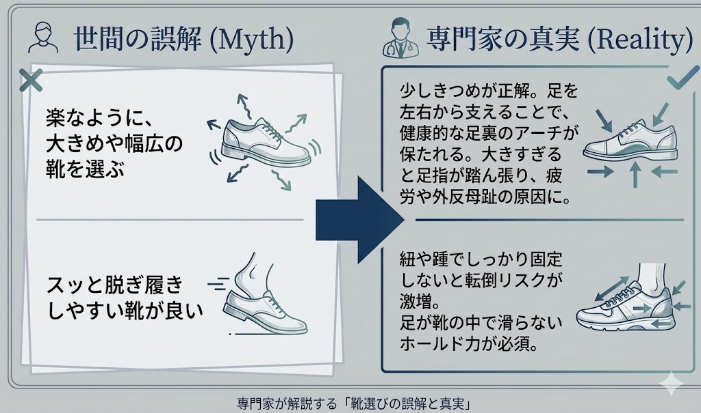
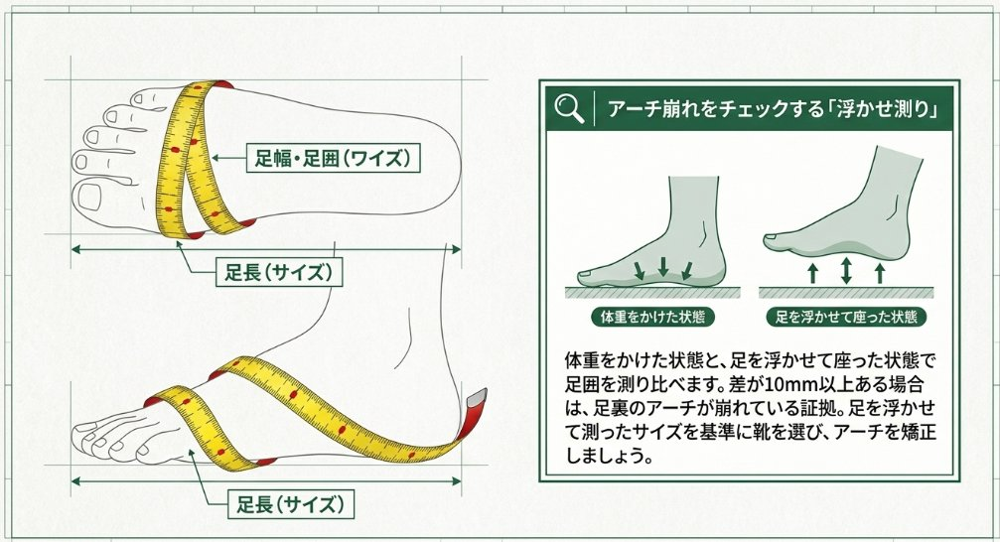
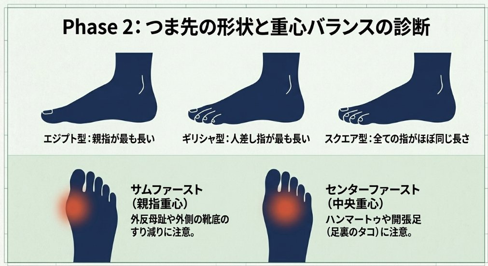
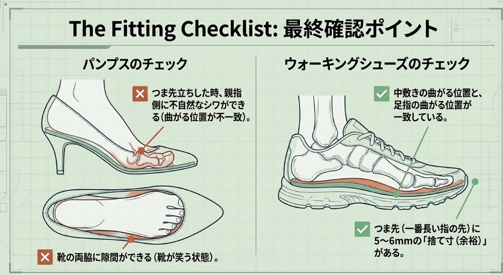
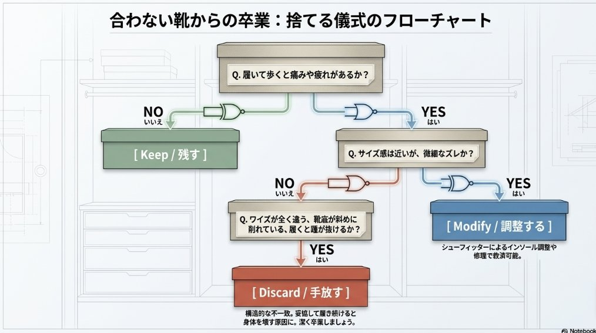
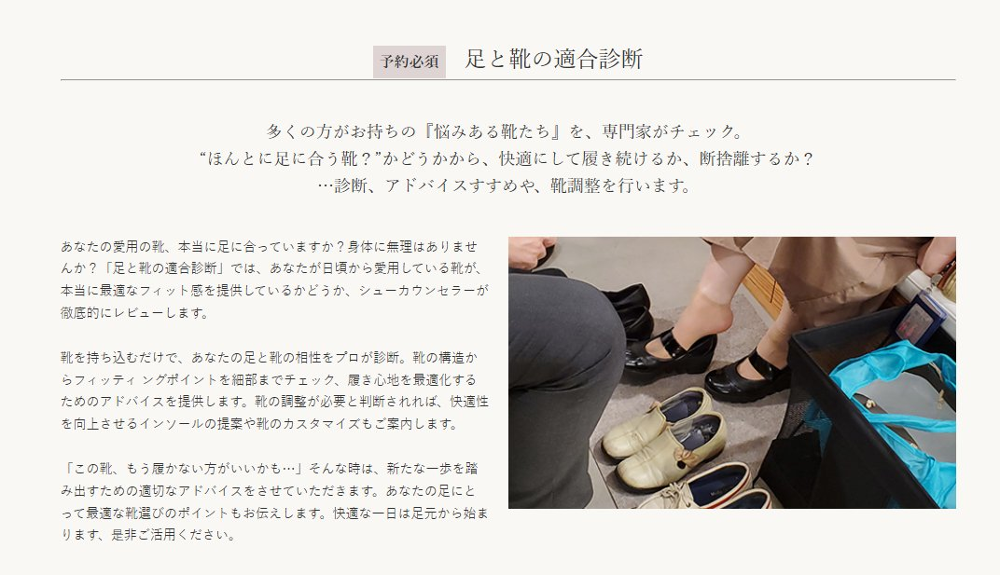

Shoe Fitting Diagnosis
「ずっと靴探しに苦労してきた」という方の多くは、
自分の足の個性を知らないまま靴を選んでいます。
シューフィッターが、あなたの足と靴の関係を
科学的に診断します。
Your Worries
あなたが感じているその不快感には、必ず原因があります。
新しい靴を買っても
すぐ痛くなる
足の形に合っていない靴を選び続けている可能性があります。
靴の中で足が
ズレる・かかとが脱げる
細足の方によく見られる症状。ワイズが合っていないサインです。
外反母趾・タコ・
魚の目が気になる
合わない靴を履き続けることで身体の不調につながります。
疲れやすく、
長時間歩けない
適切な靴とインソールで、歩行の質は劇的に改善できます。
靴のサイズが
左右で違う気がする
左右差は珍しくありません。計測で正確な基準サイズがわかります。
気に入った靴が
どれも足に合わない
骨格タイプを知ることで、似合う靴・合う靴の基準が明確になります。
Myth & Reality
「ゆったりした靴が楽」「脱ぎ履きしやすい靴が良い」——
長年信じてきた靴の常識が、痛みや不調の原因になっているケースが多く見られます。

専門家が解説する「靴選びの誤解と真実」
「楽なように大きめ・幅広の靴を選ぶ」のが正しいと思っていませんか？実は少しきつめが正解。足を左右からしっかり支えることで、健康的な足裏のアーチが保たれます。大きすぎると足指が踏ん張り、疲労や外反母趾の原因になります。
「スッと脱ぎ履きできる靴が良い」は危険なサイン。紐やかかとでしっかり固定しないと転倒リスクが激増します。足が靴の中で滑らないホールド力こそが、安全と快適さの鍵です。
Scientific Approach
足の形・骨格タイプ・重心バランスを科学的に把握することで、
本当に合う靴が初めてわかります。

Phase 1｜足のサイズ・アーチ診断

Phase 2｜骨格タイプ・重心バランス診断

Phase 3｜フィッティング最終確認

Phase 4｜今ある靴の見直しフローチャート
How It Works
オンラインまたはお電話にて、ご都合のよい日時をご予約ください。
現在の靴の悩み・お悩みの靴・お仕事・生活スタイルをヒアリング。
足のサイズ・骨格・重心バランスを科学的に計測。お悩みの靴を持参いただけます。
計測結果をもとに、靴選びの基準・インソール・靴の調整方法をご提案。

Shoe Fitting Diagnosis
多くの方がお持ちの「悩みある靴たち」を、専門のシューフィッターがチェック。"本当に足に合う靴？"かどうかから、快適にして履き続けるか、断捨離するか——診断・アドバイス・靴調整を行います。
Expert's Message
快適な一日は、足元から始まります。
自身の足の個性を正しく理解し、科学的な根拠に基づいて靴を選ぶことが、
身体全体の健康維持につながります。
LADIES KID'S シューフィッター
FAQ
シューフィッターによる専門的な診断で、
長年の靴の悩みに、科学的なアンサーを。
ご予約はオンラインまたはお電話にて承っております。
お悩みの靴はぜひご持参ください。